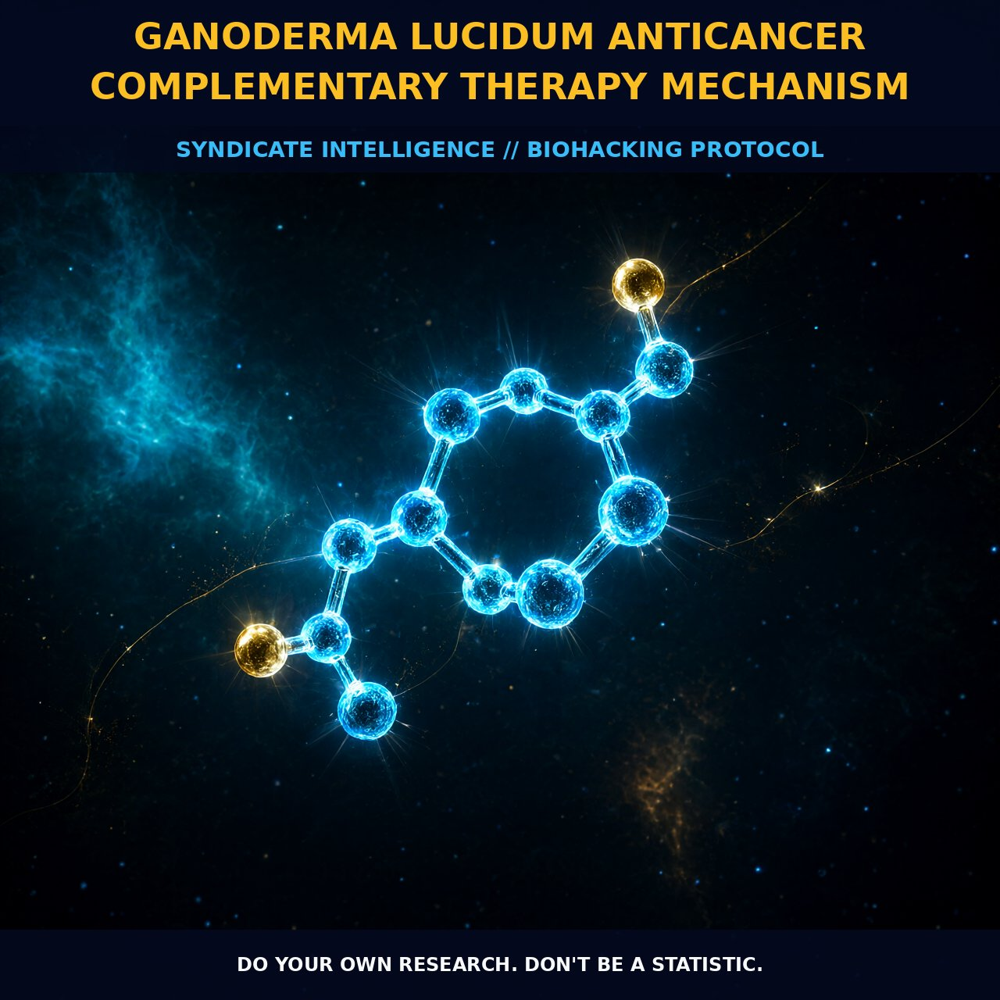

Ganoderma Lucidum: Immunomodulatory Oncology and the Gut-Brain Axis

1. The Immunomodulatory Architecture
Ganoderma lucidum operates as a sophisticated immunomodulator rather than a blunt cytotoxic agent. It leverages its complex phytochemistry to create a hostile environment for tumorigenesis through multiple parallel pathways. The primary bioactive drivers are polysaccharides, specifically beta-glucans with beta-1,3 and beta-1,6 linkages. These compounds interact directly with innate immune receptors to trigger signaling cascades that regulate cell proliferation and suppress tumor growth.
Crucially, these bioactive elements do not merely stimulate immune activity; they modulate microglia-mediated neuroinflammation and systemic inflammatory responses. This prevents the chronic low-grade inflammation that often supports cancer progression. By inhibiting key signaling nodes such as the TLR4/MyD88/NF-kappaB axis, Reishi helps downregulate inflammatory markers like IL-1beta, iNOS, and COX-2, effectively removing the fuel from the fire that feeds cellular mutation and expansion.
2. Dual-Action Pharmacology & Antiproliferative Depth
The triterpenoid fraction of Ganoderma lucidum provides a complementary layer of mechanistic depth, often working in tandem with polysaccharides to exert antiproliferative and anti-angiogenic effects. While polysaccharides primarily enhance immune surveillance through the activation of natural killer cells and T-lymphocytes, triterpenoids contribute to the suppression of tumor metastasis and the modulation of cellular differentiation.
This dual-action pharmacology allows the mushroom to address the paradox of potency in cancer therapy. Therapeutic pressure from single-target pharmaceuticals can sometimes lead to drug resistance or tumor heterogeneity. By targeting multiple points of failure simultaneously, Ganoderma lucidum creates a multidimensional defensive architecture that is less susceptible to the evolutionary escape strategies employed by malignant cells.
3. Gut-Brain Axis and Systemic Surveillance
The immune modulation provided by Ganoderma lucidum extends deeply into the gut-brain axis and systemic microbiota balance, creating an endogenous anti-cancer ecosystem. Research indicates that polysaccharides from Reishi ameliorate microbiota dysbiosis and increase the production of short-chain fatty acids. These fatty acids are critical for maintaining gut barrier integrity and reducing endotoxemia.
This improvement in gut health is not peripheral but systemic. A robust intestinal barrier prevents the leakage of lipopolysaccharides that would otherwise perpetuate chronic inflammation and promote tumorigenesis in distant tissues like the colon. Furthermore, the activation of innate immune responses by beta-glucans correlates with enhanced counts of CD3+, CD4+, and CD8+ T-lymphocytes, indicating a more balanced and responsive immune repertoire capable of clearing aberrant cells.
4. Protocol Implementation and Bioavailability
For practical application, the preparation method significantly influences bioavailability and mechanistic outcome. Water-soluble polysaccharides are best extracted through decoction or hot water infusion, ensuring that the beta-glucans remain active to modulate immune cell function and microglial behavior. Triterpenoids, being more lipid-soluble, may benefit from dual extraction methods or co-administration with fats to optimize absorption.
Consistency is key; daily self-administration over extended periods, such as the 84-day protocols seen in trials, appears necessary to achieve steady-state modulation of inflammatory markers and microbiota composition. While effective fractions demonstrate benefits at levels that support significant immune cell population enhancement without inducing hyper-immune responses, stacking with other adaptogenic fungi like Lion’s Mane can amplify gut-brain axis benefits and CREB/BDNF signaling.
Prostar Life Hack
For optimal synergistic uptake, pair your Reishi triterpenoids with a source of healthy fats (such as MCT oil or ghee) to maximize lipid-soluble absorption, while utilizing hot water decoctions for polysaccharide-rich preparations to target systemic inflammation and immune surveillance simultaneously.
Prostar Life Hack
For optimal synergistic uptake, pair your Reishi triterpenoids with a source of healthy fats (such as MCT oil or ghee) to maximize lipid-soluble absorption, while utilizing hot water decoctions for polysaccharide-rich preparations to target systemic inflammation and immune surveillance simultaneously.
[ AUTHOR: LEAD TECHNICAL RESEARCHER ]